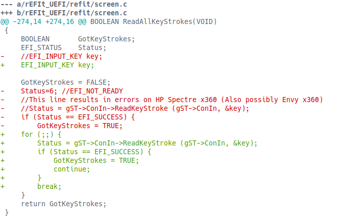

Mac OS on a PC
Booting Mac OS on non-Apple hardware presents unique challenges, particularly when bugs appear with your specific hardware configuration
Booting Mac OS on non-Apple hardware presents unique challenges, particularly when bugs appear with your specific hardware configuration